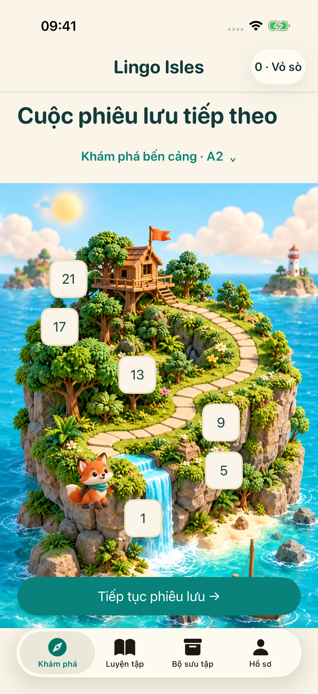
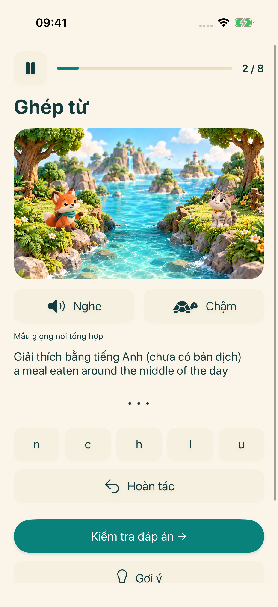
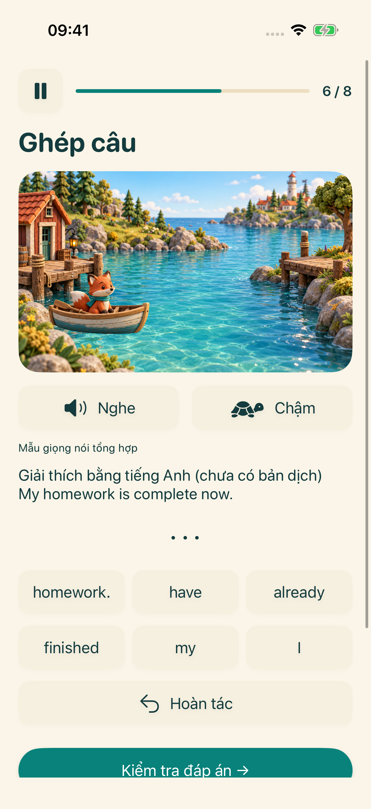
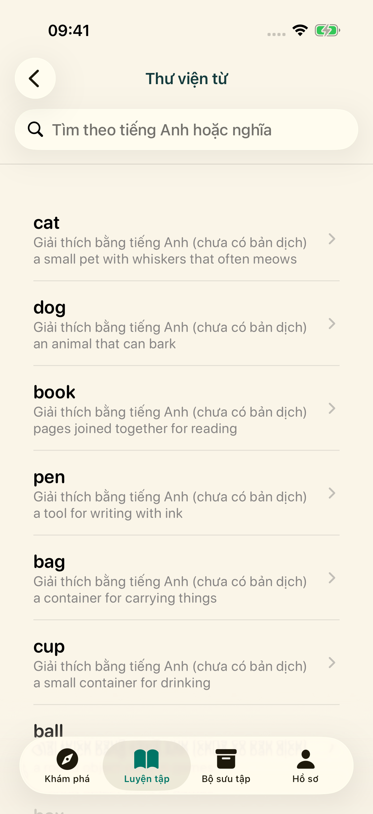

Hòn đảo tiếp theo đang chờ bạn
Chọn giai đoạn học rồi đi theo hành trình gồm những bài luyện tiếng Anh ngắn.
Khám phá bốn hòn đảo học tập. Lắng nghe, ghép từ, xếp câu và thử cất giọng — mỗi lần là một khám phá nhỏ.
Khám phá chuyến phiêu lưuĐang chuẩn bị ra mắt trên iPhone và iPad


Chọn giai đoạn học rồi đi theo hành trình gồm những bài luyện tiếng Anh ngắn.

Nghe giọng đọc của hệ thống và sắp xếp chữ cái để luyện đánh vần tiếng Anh.

Sắp xếp các từ theo thứ tự và khám phá cách tạo nên câu tiếng Anh.

Khám phá thư viện từ, lưu từ yêu thích và ôn lại những gì đã học.

Thu âm, nghe lại rồi thử lần nữa. Thiết bị hỗ trợ có thể tùy chọn chuyển giọng nói thành văn bản ngay trên thiết bị. Đây là phần luyện tập, không phải chấm điểm phát âm.
Giao diện hỗ trợ 16 ngôn ngữ. Phần giải thích bài học có bằng tiếng Anh và tiếng Trung giản thể; với các ngôn ngữ khác, nếu chưa có bản dịch, phần giải thích tiếng Anh sẽ được ghi rõ.
Nội dung học và tiến độ được lưu trên thiết bị của bạn. Không cần tài khoản hay đồng bộ đám mây do nhà phát triển vận hành. Tài nguyên giọng nói phụ thuộc vào thiết bị; dịch vụ quảng cáo và quyền riêng tư cần kết nối mạng.
Hồ sơ dưới 18 tuổi hoặc chưa chọn nhóm tuổi sẽ không bắt đầu quy trình quảng cáo. Với người lớn, quảng cáo phụ thuộc vào lựa chọn quyền riêng tư và tình trạng cung cấp. Xem quảng cáo nhận thưởng là tùy chọn.